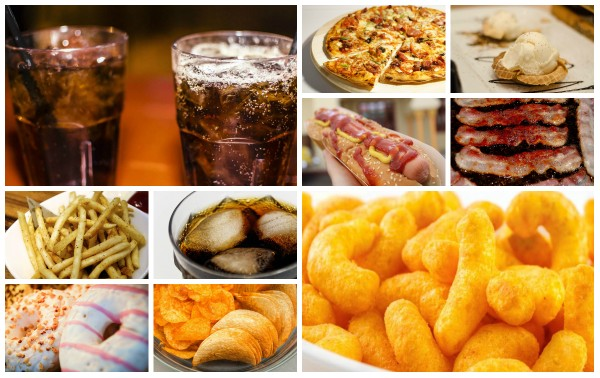

Artigos
O maior estudo sobre hábitos alimentares no Brasil
Apesar de termos diversas pesquisas no mundo sobre alimentos saudáveis e hábitos alimentares ainda não temos no Brasil uma grande pesquisa sobre os hábitos alimentares dos brasileiros. Não sabemos quais alimentos protegem a nossa saúde e quais alimentos devemos evitar. Perguntas do tipo: Farinha de Mandioca faz bem? Açaí faz bem? Torresmo frito faz bem? E o arroz? É herói ou vilão? dentre outras ainda não sabemos responder direito. Foi pensando nisso que a USP - Universidade de São Paulo - está elaborando a maior pesquisa sobre hábitos alimentares dos brasileiros jamais feita no Brasil. Esta pesquisa vai durar 10 anos e pretende responder perguntas como as citadas acima e muito mais. Você pode participar da pesquisa acessando o link no menu ao lado.
Alimentos Saudáveis

Uma alimentação saudável é essencial para mantermos nossa Saúde em dia. Alimentação saudável
envolve comer alimentos saudáveis. Enquanto aguardamos estudos mais específicos para o Brasil, aproveitamos
da literatura estrangeira. Segue a lista com os 10 alimentos mais saudáveis de todos, segundo
o site familia.com.br :
- Maçã
- Castanha-do-Pará
- Aveia
- Banana
- Repolho
- Caju
- Abacate
- Molho de Tomate
- Limão
- Couve
Alimentos Não Saudáveis
 Por outro lado também existem alimentos que devemos evitar, pois os mesmos, tem o potencial
de serem prejudiciais para nossa Saúde. Tendo isso em mente, segue a lista com os 10 piores
alimentos do mundo, segundo o site Jasmine Alimentos :
- Refrigerante Diet
- Refrigerante
- Donuts (Rosquinhas Fritas)
- Cachorro Quente
- Bacon
- Salgadinhos de Batata Industrializados
- Batata Frita
- Pizza
- Salgadinhos de Milho Industrializados
- Sorvete
Você pode aprender mais sobre alimentação saudável clicando --AQUI--
Quando falamos de alimentação um assunto não pode deixar de vir à tona
que são os carboidratos. Uma vez que a maior parte da nossa alimentação vem
dos carboidratos, então é melhor saber quais são os carboidratos bons, que
trazem benefício para a nossa alimentação.
Carboidratos Bons
Segue uma tabela com carboidratos bons e seu tipo, você pode se aprofundar lendo o artigo completo do site Minuto Saudável.| Alimento | Tipo de Carboidrato |
|---|---|
| Feijão Preto | Complexo |
| Aveia | Complexo |
| Grão-de-Bico | Complexo |
| Batata-Doce | Complexo |
| Lentilha | Complexo |
| Maçã | Complexo |
| Amendoim | Complexo |
| Pão Integral | Complexo |
| Iorgute Natural Desnatado | Complexo |
| Brócolis | Complexo |